Refugee Countries Research Project
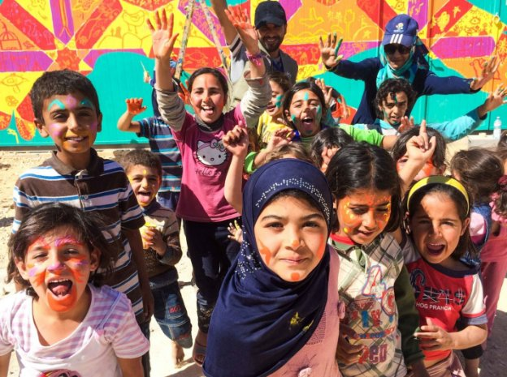
Syria

Demonym: Syrian
Population (2023 estimate): 23,227,000
Geographical Location: 

Capital: Damascus
Culture
Important Symbols/Gestures (body language)
-In many Arab nations, the thumbs up gesture can equal the middle finger. The older generation will tend to be more sensitive to this while the younger people might understand.
-The gesture of putting your palms up with your fingertips touching (the gesture popularized by Italian culture) can mean that one is asking for patience, to add emphasis, or to ask for attention.
-Measuring things with your arm is more common than using your hands. (For example, if you were trying to show the size of a bug your found with your fingers, it’s better to use your arm length.)
-In the Arab world, handshakes happen much more often than the West. One would shake hands every time they saw someone and every time they departed. It is more natural that handshakes are done amongst people of the same sex. If you are not comfortable with a handshake, touching your right palm to your heart can replace it as a greeting.
The pinched hand gesture
Language
-Akin to other Arab nations, Modern Standard Arabic official and most widely spoken language in Syria.
-Various dialects of Levantine and Mesopotamian (Iraqi) Arabic are spoken in the West and Northeast regions of the country respectively.
-Some of the smaller languages (in order of lesser speakers): Kurdish, Turkish, 4 dialects of Neo-Aramaic, Circassian, Chechen, Armenian, and Greek. None of these languages have official status in the country.
Norms (behaviors) /Customs
-The right hand is considered as favorable in the Islamic world; the left hand is reserved for cleaning, bathing, and hygiene. The right hand or both hands should be used for eating, waving/gesturing, offering items, and touching people. The left hand should only be used outside of its purpose when an action is inevitable. This is a custom that is widely observed throughout the Islamic world.
-If an older person enters the room, it is respectful to stand up and greet them; if there are no seats available, one should offer them their seat. It is also respectful to offer one’s seat to a woman, especially if they are with a child.
-People often each other without notice or an invitation. If this occurs, the host is expected to cease their activities and be hospitable.
-Placing one’s feet on top of a table is disrespectful. Therefore, showing the soles of one’s feet are also inappropriate.
-When offered something, it is polite to decline it once before accepting it from the giver. This shows the humbleness of the receiver.
-It is considered polite to share one’s dish if they are dining with another person.
-Lunch is typically eaten in the afternoon at 2:00 or 3:00 pm; it is the largest meal of the day. Dinner is often eaten late because of this.
Beliefs/Rituals/Values
-Most Syrians are Muslims (84% in 2021) with the majority being Sunnis and a much smaller population of Shias.
-Christians (both Orthodox and Catholic groups) account for about 10% of the population.
-The rest of the population are Druzites, Jews, Yazidis, ones who practice other beliefs, and atheists.
-More devout Muslims will avoid any pork and alcohol.
Traditions
Food
-Some main dishes of a meal are the Sfiha (meat pies), Kibbeh (wheat balls filled with meat and vegetables), and Fool Ma’ Rizz Rice (meat and fava beans). The Dawood Basha (Middle Eastern meat balls), the Mujdara (lentils and rice with onions), and the Laban Bikhyar (cucumber yogurt salad) are some other very popular dishes too.
Dawood Basha
-A common flatbread is the Khoubiz. A popular side dish is the Syrian Potato Salad. A common dessert is the Halawet el Jibn (rolls of cheese with cream).
Clothing
-Muslim women dress in modest clothing, such as long robes that cover their entire body except their hands and face.
 Dancing the traditional Debke dance
Dancing the traditional Debke dance
-Muslim men traditionally wear a long gown called the Kaftan. Jeans and casual clothing are uncommon.
-There is no official dress code in Syria, but it is respectful to wear conservative clothing and to wear clothes that extend below the knees.
Arts and Literature
-A lot of the artwork that was produced before the 20th century featured shapes, tessellations, and calligraphy, as the depiction of people and animals were forbidden by the Islamic Law.
-Beautiful art of these patterns were displayed on praying rugs, furniture, and architecture.
-Some of the most popular poets and authors from Syria who have written books throughout history are Nizar Qabbani (1823-1998), Hanna Mina (1924-2018), Haidar Haidar (b. 1936), Fawwaz Haddad (b. 1947), and Khalil Sweileh (b. 1959).
Music
-Some very popular modern Syrian music artists are Omar Souleyman, Lena Chamamyan, George Wassouf, Assala, Samo Zaen, Avraam Russo, and Issam Houshan.
-Some popular musicians of Syria’s past were Asmahan (1912-1944) and Farid al-Atrash (1910-1974).
Omar Souleyman
Push Factors
-The war has displaced more than 13.5 million people in total with 6.8 million becoming refugees and asylum seekers and the other 6.7 million being forced to be displaced inside their own country.
-With a destitute economy, destroyed homes and towns, no good opportunities and education, a government that violates the people’s rights and freedoms, and a very poor quality of life, approximately 36% of the population is displaced with 11.1 million people needing humanitarian aid.
-The pandemic has worsened the lives of many Syrians with more than 80% of its population living in extreme poverty.
-More than 6.5 million of Syrian refugees have fled to Turkey, Lebanon, Jordan, Germany, Iraq, Egypt, and Sweden.
Current Political Situation
-Officially beginning on March 15, 2011, there has been a civil war throughout Syria where many political factions are involved. The main groups involved are the Syrian Government led by the president Bashar Al-Assad, the Free Syrian Army, and the Islamic State (ISIS). Each group has their own set of alliances from different nations and organizations/militias.
-Many violations and abuses have occurred at the hands of the fighting factions where the lives of 227,000 civilians have been taken according to the Syrian Network for Human Rights (SNHR) since the beginning of the war.
-In 2021, Bashar Al-Assad entered into his fourth term as the president which allows him to stay in office for 7 more years.
-Many refugees that return to Syria are still subject to a life in poverty, arrest and inhumane punishments, a lack of basic humanitarian assistance, jobs, and an education.
-Women are still subject to great patriarchy in households and the law favors men’s rights over women’s rights.
-People who identify as a part of the LGBTQ+ community are punished severely and are subject to violence.
-Turkey, Iran, Russia, and the United States continue to be greatly involved in Syria’s civil war.
Sources:
https://www.hrw.org/world-report/2022/country-chapters/syria
https://www.un.org/press/en/2022/sc14870.doc.htm
https://worldpopulationreview.com/countries/syria-population
https://culturalatlas.sbs.com.au/syrian-culture/syrian-culture-etiquette
https://www.countryreports.org/country/Syria/recipes.htm
https://freedomhouse.org/country/syria/freedom-world/2021
https://www.newworldencyclopedia.org/entry/Syria#Culture
http://worldlyrise.blogspot.com/search/label/food%20from%20Syria
https://www.statista.com/statistics/740233/major-syrian-refugee-hosting-countries-worldwide/
https://www.arabicpod101.com/blog/2019/08/16/uae-body-gestures/
https://arablit.org/for-teachers/syrian-writers/
http://worldlyrise.blogspot.com/2020/01/syria-art-and-literature.html
https://www.last.fm/tag/syrian/artists?page=1
Venezuela
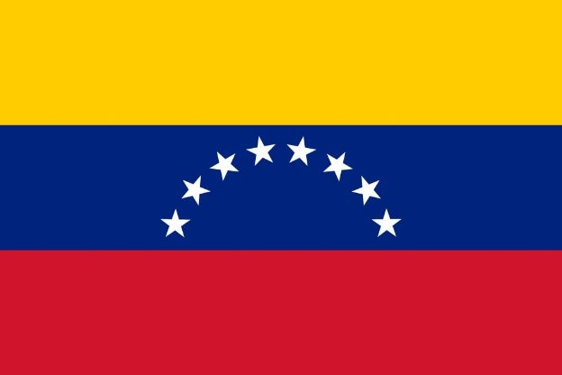
Demonym: Venezuelan
Population (2023 estimate): 28,838,000 6,666,000
Geographical Location: 

Capital: Caracas
Culture
Important Symbols/Gestures (body language)
-Physical contact is very common between Venezuelans. It is natural to put the arms around someone’s shoulders as a sign of friendship. Physical contact is also often used to reinforce a point in a conversation and the type of contact depends on the context.
-Maintaining direct eye contact is important; it shows the others that you are paying attention and being respectful.
-Gesturing with the hands while talking is very common; it brings emphasis to a point or gives the conversation a sense of liveliness. Some common gestures are blowing a kiss to show affection (“lanzar besitos”- to blow kisses), indicating that you want to step outside to smoke by imitating a smoking gesture, and doing the crossing gesture to keep away a bad thought from you or another person.
-Making the okay gesture with your index finger and thumb can have a homophobic implication to it. It is considered a rude gesture.
-To point at someone or something or to beckon someone, it is considered rude to use just the index finger. Using the entire hand is more polite.
-When greeting someone for the first time, shaking hands is considered polite but when people are more acquainted, hugging and/or giving a kiss on the right cheek (between all sexes) becomes the norm.
Language
-The main language of Venezuela is Venezuelan Spanish (influenced by South American and Caribbean indigenous languages, African languages, Portuguese, Italian, and English). Various other local dialects and indigenous languages are prominent in the country.
-Chinese, Portuguese, Italian, and Wayuu (an indigenous language) are the other major languages spoken in Venezuela.
Norms (behaviors)
-Honesty is very important. People tend to be more open about their thoughts and emotions; having a roundabout approach to a point is common. Conversations are often loud and include a lot of lively body language; however, Venezuelans are very attentive listeners. Also, it is natural to include humor into the conversation.
-Like other cultures, Venezuelans communicate differently according to the status and relationship they have with the person they are speaking to. A quieter tone is used towards a person who has a higher social standing.
-The distance of personal spacing is normally closer in Venezuela than the distance that is considered as appropriate in the West. Moving away when involved in a close interaction is considered rude.
-As the political situation in Venezuela is very complicated and as it greatly affects the lives of its people, Venezuelans are very open and willing to talk about the topic. It is best to take the topic seriously and to listen to their viewpoint and express sympathy.
-Among Venezuelans, it is important that any form of criticism is delivered privately and not openly. Even though their conversations style if often direct and open, negative opinions are still offensive.
-Usually, Venezuelans have a relaxed attitude towards timekeeping; that means social and community events can start late and continue to run over the planned time. Though in a professional/business setting, it is important to be on time.
-Some informal greetings that are used commonly in Venezuela are “Epa” (Hey), “Hablalo” or “Hablame” [(Hello, how’s it going?) The whole sentence is included in this slang greeting.], “Que mas?” (What’s up?), “Que paso?” (What’s happening?), and “Que hubo” [(Hello, how are things?) Similar to Hablalo/Hablame].
-When making a toast, the Spanish word for “cheers!” is “salud!”
-When eating with Venezuelans, one should not eat until everyone is seated. Sometimes, the host indicated when to start with “Buen provecho” which means “enjoy” or “bon appetit.”
-Do not rest your feet on furniture; it is considered rude.
Beliefs/Rituals/Values
-Families and local communities are valued highly by Venezuelan individuals: they generally have strong relations with them.
-Across Central and South America, there are a variety of different cultures and nations; one should never assume that its people are all similar. Therefore, Venezuelans would first identify proudly as Venezuelans and then as Latin Americans.
-Freely questioning Venezuelans of folk beliefs or superstitions is considered as rude.
-Simón Bolívar is revered and considered as a national hero by many Venezuelans; it is best to not criticize him.
-Making strong statements or criticizing Hugo Chavéz and his concept of Chavismo should be avoided. These topics are sensitive, and it is best to let the Venezuelan person lead the tone of the conversation.
-There is a superstitious belief that giving knives as a gift and passing salt at a dining table can bring conflict and an end to the friendship.
Traditions
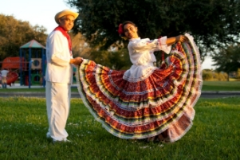
Clothes
-The traditional and national costume for men is Liqui liqui; it is often worn with an Alpargata (an open toed sandal) and Llanero hat (wide brimmed hats). The Liqui liquid usually comes in light colors and it consists of a jacket and trousers.
-There is no official name for the traditional costume for women but usually, the costume consists of a long, ruffled, and flowing skirt, and a blouse with off-the-shoulder sleeves (the skirt and blouse can also come as a one piece). The fabric used is generally colorful and filled with patterns. Flowers are often used to adorn the look.
Food
-Some popular traditional Venezuelan foods are Pabellón Criollo (a plate of rice, plantain, beans, and beef), Hallacas (meat tamales that are usually eaten during December and Christmas), Pan de Jamón (ham bread that is also eaten during the December Christmas season), Bollo Pelón (corn dough filled with meat stew), Pisca Andina (egg and milk soup), Patacón Zuliano (plantain sandwich), Tequeños (Venezuelan cheese rolls), Mandocas (Fried cornmeal rings), Fosforera (seafood soup), and Arepas (an iconic Venezuelan dish made with cornmeal dough and various fillings).
-Some popular snacks and drinks in Venezuela are Tizana (fruit and berry punch), Ponche Crema (milky alcoholic drink served in December), Paledonias (brown cookies with a cake texture), Dulce de Lechosa (candied papaya-most commonly eaten around Christmas and New Year’s Eve), Huevos Chimbos (Egg yolks in syrup), Quesillo (caramel flan pudding), Golfeados (bread rolls with cheese and raw cane sugar), and Torta de Piña (pineapple cake).
Arts and Literature
Music
-Popular dances in Venezuela are the Merengue, Salsa, and Bolero.
Push Factors
-Millions of people in Venezuela are in severe need of basic healthcare, adequate nutrition, and other humanitarian services.
-Detainees and their families are tortured brutally and are often faced with persecution. Demonstrations are violently suppressed, and the security forces of the country have raided many suspects’ homes.
-Between 2016 and 2019, more than 19,000 people have been killed by the security forces, which leads to persistent fear among the population.
-Most displaced Venezuelans reside in Colombia, Peru, Ecuador, Chile, and the United States with Colombia hosting the largest population of 1.8 million Venezuelan refugees. Since 2014, more than 6.05 million Venezuelans have fled to foreign countries. Many refugees are faced with a difficulty in obtaining a legal status, education, healthcare, and a job in foreign countries; they are also faced with xenophobia.
-Violent conflicts between armed groups cause the suffering of the people who are caught in the crossfire or those who are under their control.
-The World Food Programme (WFP) estimated that 1 in 3 Venezuelans are food insecure with malnutrition being common. The health systems in Venezuela are very poorly set up and diseases spread easily throughout the population.
-The freedom of expression is greatly suppressed with the government having strict control over media content and political expression.
Current Political Situation
-Nicolás Maduro, the disputed current president of Venezuela, has deprived the people of basic rights and humanitarian aid. Despite pressure from international community and opposition groups, the Venezuelan government has refused to negotiate and made limited changes to its policies.
-During the pandemic, the government used the situation to their advantage in order to gain tighter control over their people.
-The government detains its political opponents and often disqualifies them from running for presidency. The little political freedom that is given to the people led to Nicolás Maduro’s successful presidential victory. For the government opposition parties, their leaders were replaced with government supporters.
-As the president dominates the judiciary branch, there have been no efforts made to bring justice to the numerous human rights violations that occur in the country.
-The government has been under investigation from international organizations and many sanctions and penalties have been imposed upon the government by various nations and organizations
Sources
https://www.hrw.org/world-report/2022/country-chapters/venezuela
https://imminent.translated.com/data-index/venezuela
https://culturalatlas.sbs.com.au/venezuelan-culture
https://www.youtube.com/watch?v=jNhQYVh3P80&ab_channel=AndreaAguilera
https://www.globalizationpartners.com/2011/06/17/what-is-neutral-spanish/
http://www.ediplomat.com/np/cultural_etiquette/ce_ve.htm
https://www.newworldencyclopedia.org/entry/Venezuela#Culture
https://theplanetd.com/traditional-venezuelan-food/
https://nomadparadise.com/venezuelan-food/
Ethiopia

----------------------------------------------------------------------------
Introduction to Ethiopia
Demonym: Ethiopian
Population (2023 estimate): 116,462,712
Geographical Location:
Capital: Addis Ababa


----------------------------------------------------------------------------
Ethiopian Culture
Religions


Note: P’ent’ay is a term for Pentecostal Christian in the Amharic-Tigray language.
Orthodox Christians
They are the largest religious group in Ethiopia. About 78% of Ethiopian Orthodox Christians go to church weekly.
Sunni Islam
A large amount of the Islamic population is in the Eastern area of Ethiopia. Majority ethnic groups such as the Oromo, Amhara, and Gurage have significant Islamic populations.
Ethiopian views on religion
Due to the high level of piety that Ethiopians have for their individual religions, conversion or abandoning one’s religion.
But overall, there is a widespread tolerance for religious diversity throughout the country. There is peaceful and respectful coexistence between the two major religions: Sunni Islam and Christianity. For example, in the capital, churches and mosques are built in close proximities and good relationships are fostered between them.
…………………………………………………………………………………………………………………………..
Attitudes and Norms
Greetings and Interactions
Handshake greetings are used, but if the hand is dirty or wet, the wrist may be offered for the shake.
Kissing both cheeks is done to welcome others.
Today, nudging right shoulders to greet or welcome someone is more common.
Passing objects with the left hand is not appropriate, and using the right or both hands is proper.
For invitations and offering things, it is polite to decline on the first or second time, but for the second or third time, you can accept, as it shows respect.
Eating
Food can be eaten from a shared platter. Eating it directly from the dish is more common than having separate plates.
Meals are often eaten with hands, and using the right hand to scoop the food from a shared dish is considered as proper.
Gifts
It is best not to open a gift when you have just received it.
It is considered rude if a gift is not returned. If you got a gift, then it is proper to give a gift back of a similar quality.
…………………………………………………………………………………………………………………………..
Food
Injera: A sourdough flatbread that is made of a grain called teff. It is eaten with most meals and it can be used to scoop up various dishes during a meal.
Kitfo: Raw beef Tartare [small cake shaped beef] flavored with a blend of Ethiopian spices. Commonly served with a cheese called ayibe and a vegetable called gomen.
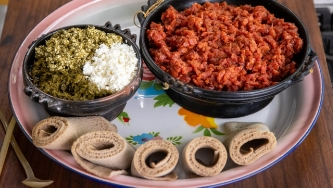
Shiro be Kibbe: A stew made by combining ground split peas and chickpeas with butter and a variety of spices.

Doro Wat: A stew made of chicken and hard-boiled eggs. Garlic ginger, onions, tomatoes, and spicy berbere sauce are added to the spicy stew.
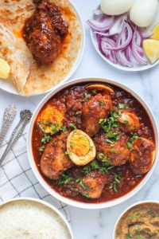
…………………………………………………………………………………………………………………………..
Languages
Ethiopia’s languages:
There are 92 individual languages in Ethiopia, including one extinct language. English is the most widely taught foreign language in schools and many Muslim Ethiopians are literate to some extent in Arabic due to their religion.
The official languages and useful phrases:
Oromo - 36 million speakers
Hello – Akkam? [Ah-kam]
Yes -- Eh
No – Lakkii
Thank you – Galatoomi (to one person) [Gala-toh-mee]
- Galatoomaa (to multiple people) [Gala-toh-ma]
Good bye – Nagaatti [Nagah-ti] (to one person)
- Nagaan [Nah-gan] (to multiple people)
What is your name? – Maqaan kee eenyu? [Mah-kaan-keh-ehnyou?]
My name is _____ – Maqaaan koo _____ Jedhama [Mah-kaan-koo_____Jedama]
Amharic – 31.8 million speakers
Hello –
Yes --
No –
Thank you –
Good bye --
What is your name? –
My name is _____ –
Somali – 6.7 million speakers
Hello –
Yes --
No –
Thank you –
Good bye --
What is your name? –
My name is _____ –
…………………………………………………………………………………………………………………………..
Holidays
National Holidays:
- Adwa Victory Day – March 2: Remembering Ethiopia’s victory over Italy’s invasion in 1896.
- May Day [Labor Day] – May 1: Remembering the International Labor Movement and honoring workers and laborers.
- Ethiopia Patriots’ Victory Day – May 5: Remembering those who fought for Ethiopia’s independence in 1941.
- Derg Downfall Day – May 28: Celebrating the day of the fall of the Communist military Derg regime achieved by the Ethiopian People’s Revolutionary Democratic Front in 1991.
- New Year’s Day -- 11th or 12th of September: On the Ethiopian calendar, the 12 of September is marked as the first day of the calendar. The first day is called Meskerem.
Ethiopian Orthodox Christian Holidays and Muslim Holidays are also widely observed.
…………………………………………………………………………………………………………………………..
Music:
 Popnable - Sort the most popular songs in Ethiopia currently by weeks, months, or years.
Popnable - Sort the most popular songs in Ethiopia currently by weeks, months, or years.
 Apple Music – Some of the most popular and iconic Ethiopian songs throughout history
Apple Music – Some of the most popular and iconic Ethiopian songs throughout history

 AfroCharts – Top Songs of Ethiopia, updated daily
AfroCharts – Top Songs of Ethiopia, updated daily

 Last FM – A place to see the top Ethiopian artists, songs, and albums currently and historically
Last FM – A place to see the top Ethiopian artists, songs, and albums currently and historically

 Spotify – Ethiopian pop music hits, updated every few days
Spotify – Ethiopian pop music hits, updated every few days

----------------------------------------------------------------------------
Background of Ethiopia
Political and Economic Situation
From a scale of 0 to 100 with 0 being the most equal, Ethiopia’s income inequality gap ranks at 35.
From a scale of 0 to 100 with 0 being the most corrupt, Ethiopia has a score of 38. With a high level of economic hardship, famine, and an ongoing military conflict between the Tigray army and the national Ethiopian army. Despite signing a treaty to stop the war in 2022, there are still armed conflicts between the two sides, causing the people living in the Tigray region and other areas of the country to become impacted.
Furthermore, those who oppose the government are often arrested unjustly and they are put through unfair trials.
For children, there is an increasing amount of human trafficking, child labor, and child marriages.
For women, domestic abuse can be overlooked by the government, and laws against rape are inconsistently enforced.
There is turbulence in the Oromia region with militants from Amhara attacking Oromo civilians and they displaced tens of thousands of civilians. This stemmed from the Amhara government trying to annex the Oromo region. Amhara civilians living in Oromia were also targeted by the Oromo military.
…………………………………………………………………………………………………………………………..
Push Factors
In November of 2020, the National Government of Ethiopia and the Tigray Region’s government’s ethnic relations deteriorated rapidly and a war broke out between the two sides. This war produced an internally displaced 5.1 million people within a year, creating the largest refugee crisis in history.
Depending on the party that is in power, ethnic groups are politically, economically, socially oppressed. Elections are often not fair and women are underrepresented in government positions. Being a part of the LGBTQ+ community is also criminalized.
During this crisis, the conflict has spilled into other regions, including Amhara, Afar, and Oromo, which contain more than 62 million people when combined. Sexual violence, violence against uninvolved citizens, ethnic killings, suppression of the free press, the cutting off of supplies and resources from the Tigray region has created a severe humanitarian crisis.
----------------------------------------------------------------------------
Sources Cited
https://guidetoethiopia.com/index.php/2016/05/27/social-norms/
https://www.willflyforfood.net/ethiopian-food/
https://www.foodrepublic.com/1291144/ethiopian-food-primer-10-essential-dishes-and-drinks/
http://www.madote.com/2015/05/ethiopia-and-horn-of-africa-migration.html
https://www.unrefugees.org/news/ethiopias-tigray-refugee-crisis-explained/
https://www.cfr.org/global-conflict-tracker/conflict/conflict-ethiopia
https://freedomhouse.org/country/ethiopia/freedom-world/2023
https://rainbowftf.ngo/destitute-people/poverty-ethiopia/
https://www.wfp.org/countries/ethiopia
https://www.rescue.org/article/crisis-ethiopia-drought-and-conflict-put-28-million-need
https://tradingeconomics.com/ethiopia/inflation-cpi
https://www.worlddata.info/africa/ethiopia/asylum.php
https://www.transparency.org/en/countries/ethiopia
- Introduction: Geographical location, demonym(s), population (2023).
- Culture: Attitudes and norms, religion and beliefs, food, music, language, and holidays.
- Background of the Country: Brief history—if needed, political situation, economic situation, push factors.
Scope:
-Country’s current political situation
-Push factors
-Culture: Food, music, language, values/beliefs
Colombia
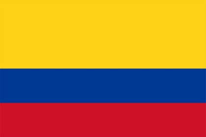
Introduction to Colombia
Demonym: Colombian
Population (2023 estimate): 52,085,167
Geographical Location:
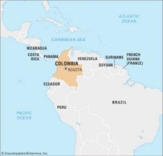 
Capital: Bogotá
--------------------------------------
Colombian Culture
Religions [2023 data]
Catholic: 71%
Protestant: 16.7%
Jehovah’s Witnesses and Adventist: 1.8%
Atheist and Agnostic: 4.7%
Irreligious Theists: 3.5%
Other religion: 1%
………………………………………………………………………………………..
Attitudes and Norms
Daily Life
- Cover your mouth when you yawn.
- Speaking with your hands in your pockets can seem rude.
- Time is more relaxed in Colombia, and you can expect lateness and delays for social and casual gatherings.
- Men commonly pay for women when paying a bill. In other cases, the host of the gathering pays for everyone. If it is a business gathering, the highest-ranking person usually pays for everyone.
- Slouching or leaning on objects and walls is seen as a bad self-image.
- Good friends often visit one another without giving notice.
- It is common to offer guests coffee when they visit. In Colombia “Tinto,” or black coffee, is very popular.
Eating
- You will seem polite if you try at least a little bit of every dish within a meal.
- When the host says “Buen provecho,” which means “enjoy,” it is time to start eating.
- When toasting, saying “salud,” which means “to your health,” can be like saying “cheers.”
- When you have finished eating, leave a small amount of food on your plate to show that you are full.
Gifting
- In many Latin American countries, quinceañera, or a girl’s 15th birthday, is considered an important transition to womanhood, and giving a present with gold is common.
- When giving flowers, avoid lilies, marigolds, and other yellow flowers, because they are used at funerals.
- Imported alcohol, chocolates, and other special products that are not sold in Colombia are good gifts.
- It is polite to avoid opening a gift in front of the giver.
………………………………………………………………………………………..
Food
Due to Colombia being a diverse country, Colombia’s land is split into 32 departments with different ethnic groups and communities, and dishes differ greatly by each group. The below dishes may not represent all of the diversity of food in Colombia.
Pan de Bono – A bread made of cassava starch, cheese, and eggs. It is best eaten when it is warm soon after it is baked.
Bandeja Paisa - A platter of an assortment of meats, a fried egg, white rice, corn, plantain, red beans, and an avocado.
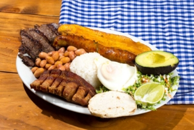
Cazuela de Mariscos – A seafood soup that combines shrimp, oysters, clams, lobster, calamari, octopus, and fish cooked in a vegetable broth with tomato and coconut milk.
Arroz con Pollo – Consists of chicken cooked with rice, onions, saffron, and variety of grains and vegetables.
………………………………………………………………………………………..
Language
Most Colombians speak Colombian dialect of Spanish or Español Colombiano. This is a grouping of the dialects of Spanish spoken in Colombia, and the dialects are very diverse. The Spanish listed below is the dialect of Paisa, or Medellín.
Basic Phrases in Español Colombiano
Hello – Hola
Yes - Si
No – No
Thank you – Gracias
Good bye – Adiós / Hasta pronto [see you soon]
What is your name? – ¿Cómo te llamas? [informal]/ ¿Cual es tu nombre? [formal]
My name is _____ – Me llamo______ [informal]/ Mi nombre es______ [formal]
………………………………………………………………………………………..
Holidays
Colombia has 18 public holidays each year, and it ranks #4 in terms of countries with the most days off. Many of them are Christian holidays, and this list shows some of the important holidays that are celebrated widely throughout Colombia. Holiday dates are set in 2023.
Epiphany - January 9 – Remembering the visit of the three wise men, or the Magi, to baby Jesus. Usually celebrated on January 6.
Saint Joseph's Day - March 20 – Honoring St. Joseph, the husband of the Virgin Mary and the foster father of Jesus.
Ascension Day - 22 May – Remembering the ascension of Jesus into heaven. Date varies by year.
Corpus Christi – June 12 – Celebrating the body and blood of Jesus Christ and the Eucharist.
Sacred Heart – July 10 - Honoring the Sacred Heart of Jesus, which is a symbol of Jesus’ love for humanity.
Feast of Saint Peter and Saint Paul – July 1 – Celebrating and honoring St. Peter and St. Paul, who are very important saints in the Christian faith.
Independence Day – July 20 – Remembering the declaration of independence of Colombia from Spanish rule.
Battle of Boyacá Day – August 7 - Remembering the Battle of Boyaca in 1819, which resulted in a victory for the forces of independence for Colombia.
Assumption of Mary – August 21 – Celebrating the assumption of Mary, the mother of Jesus, into heaven.
Columbus Day – October 14 – Remembering the arrival of Christopher Columbus to the Americas in 1492.
All Saints’ Day – November 6 – Celebrating and honoring all of the saints of the Christian faith.
Independence of the Cartagena – November 13 – Remembering the declaration of independence of Cartagena, which is a city located in the Caribbean region in Colombia, from Spanish rule.
Feast of the Immaculate Conception – December 8 – Celebrating the belief that the Virgin Mary was born without the original sin, or the concept where humans are born with the nature to sin.
………………………………………………………………………………………..
Music
 Last FM: Currently popular Colombian artists, albums, and songs
Last FM: Currently popular Colombian artists, albums, and songs

 Spotify [playlist by redmusiccompany]: 50 currently popular songs in Colombia
Spotify [playlist by redmusiccompany]: 50 currently popular songs in Colombia

 Top Charts: Filter the top Colombian songs by week and genre
Top Charts: Filter the top Colombian songs by week and genre

 Billboard: Top 25 Current Colombian Songs
Billboard: Top 25 Current Colombian Songs

Rate Your Music: 150 Colombian hit songs throughout history

--------------------------------------Background of Colombia
Political and Economic Situation
According to the association Transparency International, Colombia is the 39th most corrupt country in the world.
From 0 to 100 with 100 having the most income equality, Colombia has a score of 48.5.
According to the Fragile States Index, Colombia ranks as the 59th most fragile country in the world.
Furthermore, more than 1.8 million Venezuelan refugees currently are in Colombia due to a wide range of political, economic, and social issues in their country. They receive minimum or no humanitarian aid and they are vulnerable to killings, diseases, and have difficulty finding a job or shelter.
Push Factors
The Human Development Index, which measures the standard of living, amount of education, and the health of a country ranks Colombia as the 88th most developed country in the world.
There are many factors that contribute to why people decide to leave Colombia, with some of the most severe reasons being violence from armed groups, lack of access to justice, a high amount of poverty.
There are numerous armed groups in Colombia who participate in illegal activities such as selling drugs and mining illegally. These groups pose serious threats to civilians, such as assassinations, recruiting children, kidnapping, and sexual violence. Indigenous and minority communities are especially vulnerable to this violence.
Not only do armed groups pose threats, but the military of the Colombian government has also used excessive force on civilians and peaceful protesters with the police receiving no charges or consequences.
Furthermore, the ongoing Colombian Conflict which started in 1964, has negatively affected more than 9 million people with more than 5 million civilians being forced to move away from the danger between 1985 and 2012, which leads to about 17% of the Colombian population becoming victims of this war, which is the longest ongoing conflict in Latin America.
This conflict is a low-intensity war that is being fought between the Government of Colombia, far-right paramilitary groups, crime groups, and far-left guerillas to increase their influence on Colombian land. Each group uses drastically different tactics to fight this war, and despite a peace treaty being signed between the Colombian Government and a major far-left group in 2016 that was supposed to bring an end to this conflict, the measures have been poorly enforced and the conflict is ongoing, which continues to push Colombians out of their country.
Several large paramilitary groups have broken up into several different groups, and they pose a more widespread threat to civilians despite a declaration of cessation to this conflict.
On a more individual scale, gender-based violence, such as rape and gender discrimination is widespread throughout Colombia with women having a hard time accessing medical aid and justice. For people who are a part of the LGBTQ+ community, they face frequent violent acts, discrimination, or are even killed.
Other minority groups such as Afro-Colombians, who make up about 25% of the Colombian population, have faced frequent abuse by guerillas, security forces, and other criminal groups. Also, indigenous groups, who often inhabit resource-rich areas are and have been targeted by all sides of the Colombian conflict.
--------------------------------------
Works Cited
https://culturalatlas.sbs.com.au/colombian-culture/colombian-culture-etiquette
https://www.youtube.com/watch?v=RMEw4oeftWY&t=354s&ab_channel=YuranyLo
https://www.medellincolombia.co/general-information/public-holidays/
https://globaledge.msu.edu/countries/colombia/government
https://www.worldeconomics.com/Inequality/Gini-Coefficient/Colombia.aspx
https://www.transparency.org/en/countries/colombia
https://fragilestatesindex.org/global-data/
https://countryeconomy.com/countries/colombia
https://freedomhouse.org/country/colombia/freedom-world/2023
Myanmar/Burma

Introduction to Myanmar/Burma
A note on the name of the country: You may be confused on why there are two different names for this country: Myanmar and Burma. Burma used to be the official name of the country until 1989, where the military government changed the English translation of the name to Myanmar in order to make the name seem more inclusive of the 135 [there are many more as well] distinct ethnic groups that are recognized by the government. Because this government lacked legitimacy during the rule, many people around the world do choose to not use Myanmar. Today, both names are widely accepted and it is okay to use both or one of the names. Although some people prefer one name or the other based on their views, using either name is tolerated. This guide will use Myanmar/Burma to encompass all views on this country.
Demonym: Burmese or Myanmar [Burmese is widely used to refer to all the citizens of Myanmar/Burma no matter their ethnicity.]
Population (2023 estimate): 54,380,000
Geographical Location:
The map on the right shows how Myanmar/Burma is geographically divided. There are 15 different areas shown on the map, where 7 are regions, 7 states, and 1 union territory [territories governed by the federal government].
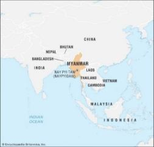 
Capital: Naypyidaw
--------------------------------------
Burmese Culture
Religions
Buddhism: Around 90%
Christianity: Around 8%
Islam: 4%
………………………………………………………………………………………...
Attitudes and Norms:
Because of the importance of Buddhism in the country, it is important to follow Buddhist [Theravada, or the more conservative branch] traditions and customs.
Daily Life
- The age and status of a person are significant in how you behave to others. In the presence of older people, it is polite to bow your head when passing them or to sit on a lower seat than them.
- Using both hands to give and receive items is respectful.
- It is essential to walk behind someone who is older or of a higher status [such as a teacher or a grandparent] than you, not in front or alongside them.
- Take your shoes off when entering a Buddhist pagoda or a monastery or when visiting someone’s house.
- Gadaw, or a verb where a person of lower social standing pays respect to someone of a higher social standing, is common. To do this, kneel and touch your palms and forehead to the floor three times.
Gifting
- Give and receive gifts with both hands.
- Gifts are opened later after they are received to make the receiver look humble.
- Gifts of high value are often not given, as the receiver might feel awkward and less humble.
Eating
- When eating something around others, it is polite to ask them if they want some of it before you eat it. Sharing food is highly important in Burmese culture.
- Before accepting an offer for a second serving, it is respectful to decline at least once before accepting.
- It is seen as rude to sing, hum, or listen to music while eating.
- Some people tend to eat with their hands instead of with utensils. If you do this, eat with your right hand only, as there is stigma around only using the left hand.
- It is inappropriate for women to drink alcohol generally.
The Significance of Body Parts
Because Buddhism is an essential part of the country’s culture, the head is considered as the most sacred part of the body, and the feet are dirty and corrupt.
- Touching anyone’s head, including their face and hair, is considered as improper, as this is considered the highest and purest part of the body.
- Patting children’s heads or touching another person’s face as a greeting is considered inappropriate.
- Touching another person’s feet or pointing with the feet at anyone or anything is considered improper and sometimes insulting.
- Putting your feet on a table is improper.
- The upper part of the body is considered superior to the inferior part.
………………………………………………………………………………………..
Food
Mohinga – One of the most widespread dishes throughout Myanmar/Burma. It is a bowl of rice noodles in a fish-based soup that is sprinkled with fried bean fritters and boiled eggs, and other vegetables.
Nan Gyi Thote/Thoke – A noodle salad made with thick rice noodles with chicken or beef curry. It is topped with boiled eggs, onions, coriander, lime slices, and crispy fritters.
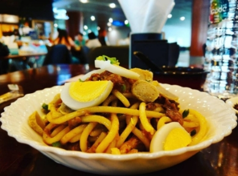
Burmese Curries – Rice and an assortment of curries that contain fish, chicken, or pork, a variety of spices, and vegetables are an important part of Burmese cuisine. The shrimp curry is a flavorful variant and is also very popular.
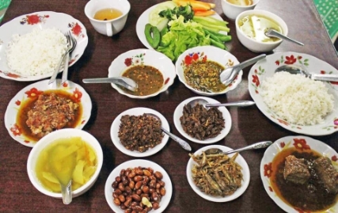
Laphet Thohk – A salad made of pickled tea leaves, roasted peanuts, an assortment of crunchy beans, sesame seeds, fried garlic, shrimp, and tomato.
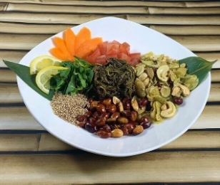
………………………………………………………………………………………..
Language
There are more than 100 languages spoken in Myanmar/Burma by its 135+ ethnic groups but about 2/3 of the population speaks Burmese, the official language. Burmese is the native language of the Bamar people, who make up about 68% of the population. The Burmese language has four tones: creaky, high, low, and stopped, and tones can change the meaning of a word. For simplicity, this guide will not be using tones for the English pronunciation.
Basic Phrases in Burmese
Hello – မဂႆလာပၝ [Min-ga-la-ba], polite and formal greeting/ ဟုံင်း [Hain] casual, more like ‘Hi!’
Yes -- ဟုတ်ကဲ့ [Hout-keh]
No – ဘယုတ်ပါဖူ [beh-yout-par-hpuu]
Thank you – ကျေးဇူးတင်ပါတယ် [kyay-zu-tin-pa-te]
Good bye -- ဘိုင်။ [bhain]
What is your name? – နာမည် သယ်လုံခေါ်ပါလဲ။ [nan-me be-lo khaw pa le]
My name is _____ – ကျွန်တော်နာမည်က_____ပါ။ [kyan-naw nan-me ka_____pa] – If identify as male, then use this. / ကျွန်မနာမည်က _____ပါ။ [kyan-ma. Nan-me ka_____pa] – If you identify as female, then use this.
………………………………………………………………………………………..
Holidays
New Year’s Day: January 1
Independence Day: January 4 – Myanmar’s Independence Day in 1948 when they declared their independence from Britain. Their colonial era started from 1886 and the independence movements saw strong resistance to their rule with Buddhist monks being a crucial part of the movement.
Union Day: February 12 – The Panglong Agreement was signed and ratified on this date in 1947 that lead to the creation of Burma as an independent state in 1948.
Peasants’ Day: March 2 – Respecting the contribution of agriculture and farming in Myanmar/Burma.
Full Moon Day of Tabaung: March 5 – The second most important Buddhist festival. Ceremonial offerings are made to 28 different statues of Buddha. Buddhists gather at temples to earn merit.
Armed Forces Day: March 27 – Remembering the rebellion against the Japanese occupation during World War II.
Thingyan Holiday/Burmese New Year: April 9 – 16 – Throwing water or dousing other people in any way or through a tool/device to wash away any bad luck from the previous year is a key theme of this festival. It is starting anew from the past.
Labor Day: May 1 – Remembering what the Labor Movement has achieved.
Full Moon Day of Kasong: May 3 – The most sacred day in the Buddhist calendar which marks three important events in Buddha’s life: his birthday, the enlightenment, and the achievement of Nirvana.
Eid al-Adha: June 29 – Myanmar/Burma also celebrates this Muslim holiday to remember Prophet Abraham’s sacrifice to God. It is celebrated widely throughout Muslim countries.
Martyr’s Day: July 19 – Remembering the assassination of General Aung San and other cabinet members.
Moon Day of Waso: August 1 – It marks the
Full Moon Day of Thadingyut: October 28 - 30
Deepavali: November 12 – Remembering the assassination of General Aung San, an activist and revolutionary leader who played a key part in Myanmar/Burma’s path to independence and other cabinet members in 1947.
Full Moon of Tazaungmone: November 26 – 27 – Marking the end of the rainy season and the end of the Kathina festival where monks are offered possessions of charity including new robes.
National Day: December 7 – Remembering the beginning of the student-led protests against British colonialism in 1920 and commemorating the key role that students played in the creation of what Myanmar/Burma is today.
Christmas: December 25
New Year’s Eve: December 31
--------------------------------------
Background of Myanmar/Burma
Political and Economic Situation
A coup in February 2021 by the military of the Union Solidarity and Development Party [USDP], or the Tatmadaw as they are called in Myanmar/Burma, forced the previous government leaders and workers out of office, placed them under arrest, and took over the governance of the country. In that same month, peaceful protests became deadly strikes. With widespread protests across the country, both police and soldiers brutally reacted to the protesters with more than 2,500 civilians killed, and over 16,500 people were arrested.
Areas of the country that are mostly controlled by rebels have been attacked by the military with civilians being held hostage, raped, killed, and bombed indiscriminately. Paramilitary groups and local forces continue to engage in brutal fighting and guerilla warfare with the Tatmadaw, who tries to enforce military rule throughout the country.
Push Factors
Over 1.4 million people have been displaced internally and internationally since the start of the military rule. Many of these people live in temporary camps in the jungle and others have tried to flee to other countries with the majority going to India and Thailand, but these countries often reject the refugees.
Myanmar/Burma is going through another violent ethnic conflict with an ethnic minority group, the Rohingya, who are a majority Muslim group, against the Tatmadaw. The Rohingya has had a turbulent history in Myanmar/Burma and they have been denied citizenship for over 40 years. Attacks and racism against this group from the Buddhist ethnic groups and the government had already forced over 300,000 refugees to flee to Bangladesh. The Tatmadaw’s conflict with the Rohingya started when Rohingya militants attacked Tatmadaw police posts and the Tatmadaw attacked Rohingya villages by setting burning them down, killing people, raping women, which was called a genocide by many international organizations. This conflict persists, and over 700,000 Rohingya have fled the country to neighboring South and Southeast Asian countries, but India has started deporting these refugees and Bangladesh has stopped receiving them.
--------------------------------------
Music
 Popnable: Find music, artists, and playlists about Myanmar/Burma. Music charts can be filtered to find daily, weekly, monthly, and annually popular songs.
Popnable: Find music, artists, and playlists about Myanmar/Burma. Music charts can be filtered to find daily, weekly, monthly, and annually popular songs.

The Sun Music: A Youtube Channel with some of the latest popular song releases from Myanmar/Burma.

 Last FM: The top Burmese/Myanmar artists, albums, and songs.
Last FM: The top Burmese/Myanmar artists, albums, and songs.

Rate Your Music: The most popular albums throughout the history of the country.

Brazil

Introduction to Brazil
Demonym: Brazilian
Population (2023 estimate): 216,422,000
Geographical Location:
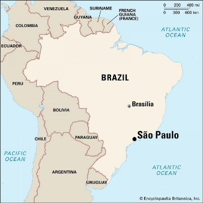
Capital: Brasília
--------------------------------------Brazilian Culture
Religion (2020 data):
Catholicism: 50%
Protestantism: 31%
Other Christian Denominations: 2%
Spiritism: 3% [Beliefs of interactions between departed souls and the living].
No religion: 11%
Other religions: 1%
………………………………………………………………………………………...
Attitudes and Norms:
Greetings and Interactions
- The concept of being relaxed and easy-going is widespread, thus arriving on a designated time is seen as impolite. It is good to arrive 15-30 minutes later than the time.
- Cafezinho, or black coffee with unrefined sugar, is a serves as a sign of hospitality and serving it for a gathering/guest can seem polite.
- It is seen as proper for men to shake hands when greeting [using both hands to shake is seen as sincere and kind] and women to kiss each other 1-3 times starting on the left cheek and alternating.
- It is also common to slap backs and hug amongst friends.
- For handshakes between men and women, the woman should extend the hand first.
- Being open and amicable is seen as good mannerism and hand gestures and touching is common to express oneself.
- Talking distance is close between conversation partners, and it is very natural to be in close proximity to others, so personal space is a small issue.
- The formal way to greet a man is Senhor [sen-yor] and for women, Senhora [sen-yora]. For single and younger women, use Senhorita [sen-yorita].
Eating
- It is good to finish all the food on your plate. Taking more food than necessary or leaving food on your plate can seem impolite, as it shows that you did not enjoy the food.
- Dressing elegantly is respected. Being on the side of dressing yourself up than under dressing is better.
- Avoid putting your elbows on the table but keep wrists above.
- Food is always passed to the left.
- Conversing and relaxing together after a meal is very common.
Gifting
- When someone has done a favor for you, giving a small gift back, such as a chocolate bar, is appreciated.
- If you are invited to a home, bringing a small gift or flowers [orchids are popular, but avoid purple ones, since purple is associated with mourning] for the host and their family is polite. You can always give a gift the next day too.
- Sharp items should not be given as gifts since they can be seen as cutting your ties with someone. Knives, scissors, and other alike items should be avoided.
- Avoid giving purple gifts or wrapping gifts in purple.
- Gifts can be opened when they are just received.
………………………………………………………………………………………...
Food
Brazil’s traditional food differs greatly from area to area due to the diversity of the identities of Brazil. Ethnic elements, such as European, Amerindian, African, and Asian [Middle Eastern to East Asian] cooking and ingredients have interacted with each other and the regional differences in ethnicity and traditions have led to a range of different foods across Brazil’s vast territory.
Feijoada: A stew consisting of black beans cooked with pork, tomatoes, cabbage, and carrots. It is often served with fried kale, bacon bits, rice, farofa [toasted cassava flour], and oranges.
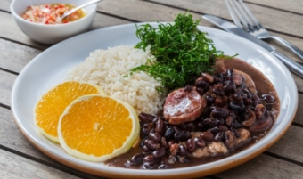
Canjica: A dessert consisting of a bowl of whole white corn pieces in milk, coconut milk, and condensed milk. It is topped with cinnamon.
Farofa: A mix of fried tapioca flour and fried bacon bits alongside rice and beans.
Coxinha: A fried snack made of chopped or shredded chicken covered in dough that is battered and fried.
………………………………………………………………………………………..
Language
Português Brasileiro, or Brazilian Portuguese, are the dialects of Portuguese that are spoken in Brazil. Nearly all the 216 million people of Brazil speak this language. Indigenous languages and African languages have heavily influenced the Portuguese spoken in Brazil.
Basic Phrases in Português Brasileiro
Hello – Oi [Means ‘hi!,’ extremely common] / Olá [O-la, means ‘hello’]
Yes – Sim [Seem]
No – Não [Nang-o, the ã is a nasal sound]
Thank you – Obrigado [If you identify as male] / Obrigada [If you identify as female]
Good bye – Tchau [Chaoo, meaning ‘bye!’] / Adeus [Ade-oosh, meaning ‘goodbye’]
What is your name? – Qual é o seu nome? [kual eh o seh-u nomi?]
My name is _____ – O meu nome é _____ [O meh-u nomi eh]
………………………………………………………………………………………...
Holidays
Brazilian Carnival [Carnaval]: Begins 51 days to easter and ends 46 days before easter – Marks the beginning of Lent. Celebrations include parades, parties, dancing and singing. Celebrations differ by region but are usually intense and there is heavy participation.
Good Friday: April 7 – Remembering the crucifixion of Jesus Christ.
Easter Sunday: April 9 – Remembering the resurrection of Jesus Christ.
Tiradentes Day: April 21 – The anniversary of the death of Tiradentes, who is considered as a martyr for playing a key role in establishing an independent Brazilian Republic in the late 18th century.
Labor Day / May Day: May 1 – Celebrating what the workers of Brazil have accomplished and the labor movement.
Corpus Christi: June 8 – Honoring the Holy Eucharist, which symbolizes the body of Christ.
Brazilian Valentine’s Day [Lover’s Day]: June 12 – Celebrating love and romance by giving gifts, festivals, and activities.
Independence Day: September 7 – Celebrating the independence of Brazil from Portuguese rule in 1822.
Our Lady of Aparecida: October 12 – A celebration of Our Lady of Aparecida, who is seen as the principal patroness of Catholics in Brazil.
Public Service Holiday: October 28 – A holiday for the public sector and government employees; most non-essential government offices are closed.
All Souls’ Day: November 2 – A day of participating in charity and praying for the dead. The prayers are for assisting the ones in purgatory.
Republic Proclamation Day: November 15 – Remembering the official end of the monarchy in Brazilian history and the start of a Republic.
Black Awareness Day: November 20 – Honoring Brazil’s large population of Afro-Brazilians.
Christmas Day: December 25 – Celebrating the birth of Jesus Christ.
--------------------------------------
Background of Brazil
Political and Economic Situation
Brazil has seen many issues, including frequent violations of human rights, especially towards the Afro-Brazilian population, women, and the indigenous people. Police brutality is often overseen and detention centers and prisons often have very poor conditions and often have more people than the capacity, with many juveniles being detained also. These problems have worsened with the previous president who served from 2019 to 2021, Jair Bolsonaro. Afro-Brazilians and indigenous populations often experience lacking justice and equity of treatment. They have a harder time finding the money to pay for education and police brutality and racism towards these minority groups are not addressed very well. For the indigenous people’s land, there is poaching, cutting trees, and mining, which harms their land and homes. Due to this, Brazil has been poorly handling their carbon emissions and they are among the top ten largest emitters of greenhouse gases. This has led to flooding and heavy rainfall, which displaced more than 25,000 people from their homes. During his presidency, President Bolsonaro encouraged politically motivated violence against groups such as cis and transgender women, especially those in the black community, and allowed civilians to possess more firearms than the Brazilian army, navy, and air force combined. This led to the increased risk of gun violence for Brazil.
………………………………………………………………………………………...
Push Factors
For 2023, the Brazilian congress voted in the favor of policies that gave the lowest funding in a decade to the Ministry of Health, which decreased the efficiency and abilities of the healthcare system to treat the people.
Not only is healthcare a concern, but about 180,000 people in Brazil are homeless and 68% of them are Afro-Brazilians. Furthermore, about 5.8 million people live in inadequate or housing of poor conditions, creating a greater crisis for the quality of living in Brazil.
In 2021, around than 63 million people were receiving minimum wage or less. This correlates to the amount of people who had severe food insecurity in 2022, who numbered as 33.1 million. 70% of this population is Black. Households in the leadership of women and Black people tend to have higher levels of food insecurity.
According to Data Folha, a well known polling institute in Brazil, 7 in 10 people were afraid to express their true political opinions in fear of violence and backlash. This was mainly caused by the violence towards activists, voters, and journalists.
Furthermore, in 2022, police brutality was severe, as the government inadequately supervised police forces. 84% of deaths from brutality were of Black people. Small crimes and suspects are often inadequately inspected nor given a chance to prove their innocence and police have higher chances of being charged minimally for their actions.
For women, sexual violence and domestic violence was frequently overlooked in 2022. Black and girls below 13 were common victims. According to CNN, Brazil is one of the most dangerous countries for women. There is a lot of social stigma and violence directed towards the transgender people too. Brazil is considered as one of the most dangerous and transphobic societies in the world with 100 to 300 people killed in recent years from violence.
--------------------------------------Music
iCharts: The top 100 trending songs in Brazil.

Billboard: Top 25 currently popular songs in Brazil.

 Shazam: Top 200 most shazamed [finding a song that you are hearing through making the app listen to it] songs in Brazil.
Shazam: Top 200 most shazamed [finding a song that you are hearing through making the app listen to it] songs in Brazil.

 Apple Music: The top 100 most popular songs in Brazil today.
Apple Music: The top 100 most popular songs in Brazil today.

 Spotify: The top 50 most popular songs in Brazil right now.
Spotify: The top 50 most popular songs in Brazil right now.

 Playback.fm: Find the most popular songs for each year for over a century.
Playback.fm: Find the most popular songs for each year for over a century.

--------------------------------------
Citations
https://www.commisceo-global.com/resources/country-guides/brazil-guide
https://culturalatlas.sbs.com.au/brazilian-culture/brazilian-culture-etiquette
https://www.rainforestcruises.com/guides/traditional-brazilian-food
https://omniglot.com/language/phrases/portuguese_br.php
https://storylearning.com/learn/portuguese/portuguese-tips/brazilian-portuguese-phrases
https://www.justlearn.com/blog/brazilian-portuguese-phrases
https://www.youtube.com/watch?v=VlEw3XMjCF0&ab_channel=LearnPortuguesewithPortuguesePod101.com
https://www.timeanddate.com/holidays/brazil/2023
https://publicholidays.com.br/2023-dates/
https://www.hrw.org/world-report/2023/country-chapters/brazil
https://www.amnesty.org/en/location/americas/south-america/brazil/report-brazil/
https://freedomhouse.org/country/brazil/freedom-world/2023
Mexico

Introduction to Mexico
Demonym: Mexican
Population (2023 estimate): 128,500,000
Geographical Location:


Capital: Mexico City
--------------------------------------
Mexican Culture
Religion (2020 census):
Roman Catholic: 77.8%
All Protestant Denominations: 11.7%
Other Christian Denominations: 1.8%
Other: 0.3%
No Religion: 8.4%
………………………………………………………………………………………………………...
Attitudes and Norms
Greetings and Interactions:
- When women greet each other in social situations, they usually pat each other on the right forearm or the shoulder.
- It is common for men to shake hands, but when they start to know each other better, they hug or slap backs.
- Arriving 30 minutes late at events and gatherings is common.
- When people sneeze, it is polite to say “salud,” which literally translates to “health,” but it actually signifies “bless you.”
- When visiting homes, visits are expected to be relaxing and meant for socializing, but it is still polite to help the host/hostess cook and clean the house after.
- Goodbyes are important, as leaving hastily can mean that you did not enjoy the visit. It is common to embrace before leaving.
- If you do not have tolerance for spicy foods, then it is good to be open about it, as you can be advised on what is mild and spicy.
Gifting
- If invited to a Mexican home, bringing flowers or sweets is polite.
- Avoid giving red flowers, as there are negative beliefs that surround them.
- Giving white flowers is good, as they symbolize positivity.
- Gifts can be opened right after they are received.
- A girl’s 15th birthday, called “quinceañera,” is considered an important milestone in her life, and it is expected that she receives grand gifts.
Eating
- Arriving on time or early can be considered impolite.
- To have good table manners, keep your hands visible when eating.
- To indicate that you have finished eating, place your knife and fork across the plate with the fork prongs facing down and the handles facing right.
- Do not start eating before the host/hostess starts.
…………………………………………………………………………………………………………………………...
Food
Tacos Al Pastor: Corn tortillas with pork that has been stacked on a long spit. It commonly contains onions, cilantro, and pineapple, and salsa.
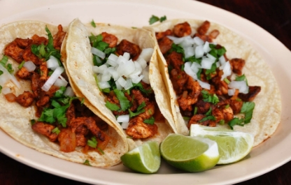
Conchas: A sweet bread with a crusty top shaped like a shell. They are made in a variety of flavors, but vanilla and chocolate are popular. They are commonly eaten by dipping in hot chocolate.
Pozole: A stew that is made from hominy, or hulled corn. It also includes pork or chicken and sometimes other meats. Tomatoes, red chilies, onions, avocado, salsa, and limes are often added.
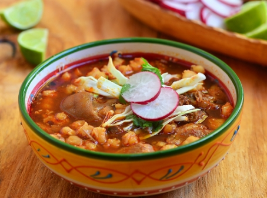
Tamales: Tamales can be found across many Latin American countries. In Mexico, tamales are made from the flour of maize, and they can be filled with sweet fillings, such as fruit, cheese and peppers, pork, corn, and chicken. They are then wrapped in corn husks and steamed.
………………………………………………………………………………………………………...
Language
Spanish is the official language of Mexico, but 63 indigenous languages are recognized as well. The Spanish spoken in Mexico has been influences by numerous indigenous languages, such as Nahuatl. There are about 10 varieties of Spanish spoken throughout different areas of Mexico.
Español Mexicano
Hello: Hola [Oh-la]
Thank you: Gracias [gra-see-as] [both c and s are pronounced like “th” in “think”]
Yes: Sí [see]
No: No [no]
My name is: Me llamo [Meh-yamo] / Soy [soi] / Mi nombre es [mi nombreh es]
What is your name? : ¿Cómo te llamas? [como teh yamas]
Bye: Adiós [adi-os, more like ‘goodbye’] / Hasta luego [asta luego, like ‘see your later’]
………………………………………………………………………………………………………...
Holidays
Day of the Constitution: Celebrated on the first Monday of February. Celebrating the ratification of the constitution in 1917.
Epiphany: January 6. After Christmas, children may receive additional gifts to their Christmas gifts on this day.
Also on this day, a sweet bread shaped like a ring, or Rosca de Reyes, is eaten. If your slice contains a plastic doll, you have to host a Candle Mass at your home and serve tamales.
Candle Mass: February 2. Remembering the day that Jesus arrived at the Temple, an important event in Christianity. Tamales are also eaten on this day.
The birth date of Benito Juarez: March 21 in 2023. Benito Juarez was Mexico’s first president who was also very revered. He is remembered on this holiday.
Independence Day: September 16. The day when Father Miguel Hidalgo made his cry for the independence of Mexico, which started the revolution from Spain and led to the independence of Mexico.
Day of the Dead: November 1 and 2. On November 1, those who are deceased that are below 18 and unmarried are honored.
On November 2, those who are deceased that are above 18 and married are honored.
Day of the Virgin Guadalupe: December 12. Honoring Our Lady of Guadelupe, a Catholic icon in Mexico, who is respected and celebrated on this day.
Christmas Day: December 25.
Holy Innocents Day: December 28. A day when jokes are played on one another. This makes this day the equivalent of April Fools day in Mexico.
--------------------------------------
Background of Mexico
Push Factors:
- Powerful criminal cartels often influence governments, especially on the local level. Through threatening and assassinating government officials, they influence elections and impact government decisions.
- Cases of governments at various levels collaborating with organized criminal groups and cases of corruption have not been addressed enough. Violence from organized crime groups are widespread throughout the country, especially from criminal cartels. With a consistently high number of homicides, various governments claim that more than 50% of these deaths are caused by cartel violence. With a high number of human and drug trafficking, children and women are especially vulnerable to being kidnapped and used by organized crime groups. Currently 105,000 people in Mexico are missing, and investigations into these cases are extremely rare.
- The military’s power has been increasing with the election of the current president, President Lopez Obrador, or AMLO. The military has been overseeing a greater variety of tasks of governance, such as construction and patrolling civilian and public spaces. Abuses by the military that violate the privacy of citizens have been overlooked often.
- The police also arrest citizens for minor crimes. Those who are accused are often not given fair trials and the independence of the court from the executive branch of the government has decreased over the past few years. In prison, violence between inmates and the torture of prisoners to obtain information is frequent.
- Minority ethnic groups, such as Afro-Mexicans and indigenous groups are disadvantaged socially and economically. Approximately 77% of the indigenous population lived in poverty according to 2022 data. Indigenous groups are vulnerable to violence, as they live on land that is rich in resources, and criminal groups target them for their land and resources.
- Journalists and human rights defenders are often targeted by the government. There have been numerous cases of kidnappings, murders, and incarcerations without fair trials.
- To look for a better life and increased employment opportunities, large numbers of families and individuals from Mexico, Guatemala, Nicaragua, and El Salvador have tried to cross the border, about 64% of these people are adults. The detainment rate of migrants is extremely high, with more than 1.7 million people being detained in 2021 alone. These people are kept in detention centers that lack humanitarian items, food, and are often in locations that are not safe. Sexual abuse and poor treatment of children have been reported in these camps.
Music
Billboard: Top 25 trending songs in Mexico right now.
Apple Music: Top 100 most popular songs in Mexico today.
Popnable: Top 40 popular songs in Mexico by each week.
--------------------------------------
Citations
commisceo-global.com/resources/country-guides/mexico-guide
https://culturalatlas.sbs.com.au/mexican-culture/mexican-culture-etiquette
https://swedishnomad.com/traditional-mexican-food/
https://travelfoodatlas.com/mexican-food
https://preply.com/en/blog/basic-spanish-words-and-phrases/
https://www.fluentu.com/blog/spanish/spanish-lisp/
https://www.babbel.com/en/magazine/this-spanish-course-will-prepare-you-for-your-mexican-vacation
https://www.pbs.org/wgbh/frontline/article/the-staggering-death-toll-of-mexicos-drug-war/
https://fragilestatesindex.org/global-data/
https://freedomhouse.org/country/mexico/freedom-world/2022
https://www.hrw.org/world-report/2023/country-chapters/mexico